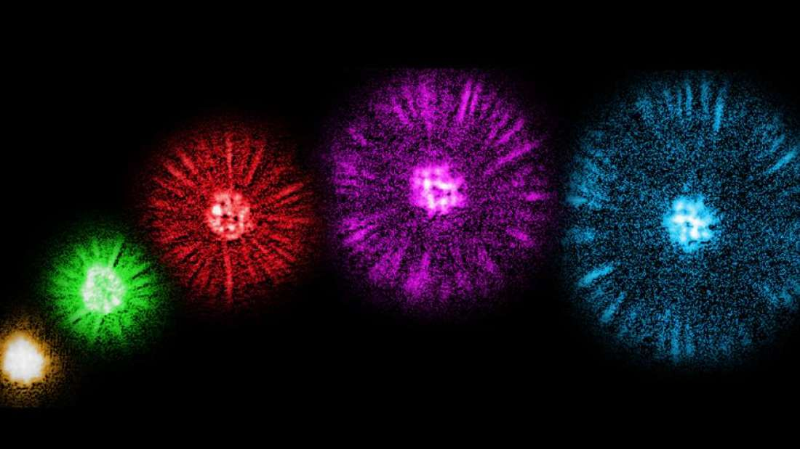

Ultracold Atoms Look Like Fireworks In Never-Before-Seen Quantum Behavior

Researchers at the University of Chicago have discovered a new quantum behavior in ultracold atoms
that surprisingly looks like mini fireworks.
The team studies a state of matter called a Bose-Einstein condensate that occurs when certain parti cles are cooled to almost absolute zero. As reported in Nature, the team achieved these conditions for some atomic gases and discovered that if the atoms were subjected to magnetic fields and made to collide with each other, they would fly out of the collisions in rather uniform “jets”.
"If you'd asked almost anyone to predict what would happen, they would have said that these collisions would just send atoms flying off in random directions," lead author Logan Clark said in a statement. "But what we see instead are thousands of bosons bunching together to leave in the same direction.
Clark and fellow postdoc Anita Gaj were the first to see this behavior. The team set up the experiment to investigate if the quantum phenomenon of superradiance could be achieved in a Bose-Einstein conden sate. They hoped to form an analog of it at least, by having a strong stimulation of spontaneous colli sions sending atoms flying in random directions. Instead they discovered that atoms bunched up in jets.
"It's like people forming a consensus and leaving in groups," co-author Professor Cheng Chin, added.
"This is a very fundamental behavior that we have never been seen before; it was a great surprise to us.”
The observations are very important from a theoretical perspective but are also important for potential applications. Quantum technology could benefit from such a behavior if researchers find an application. "For example, if you sent a particular atom in one direction, then a bunch more would follow in that same direction, which would help you amplify small signals in the microscopic world," Clark explained.
The potential applications the team is investigating are called “driven” quantum systems. They are crucial for developing quantum technologies but aren't fully understood. On the other hand, Bose-Einstein Conden sate is a well-studied area of physics, so such a discovery could have a significant impact on the field.
The team studies a state of matter called a Bose-Einstein condensate that occurs when certain parti cles are cooled to almost absolute zero. As reported in Nature, the team achieved these conditions for some atomic gases and discovered that if the atoms were subjected to magnetic fields and made to collide with each other, they would fly out of the collisions in rather uniform “jets”.
"If you'd asked almost anyone to predict what would happen, they would have said that these collisions would just send atoms flying off in random directions," lead author Logan Clark said in a statement. "But what we see instead are thousands of bosons bunching together to leave in the same direction.
Clark and fellow postdoc Anita Gaj were the first to see this behavior. The team set up the experiment to investigate if the quantum phenomenon of superradiance could be achieved in a Bose-Einstein conden sate. They hoped to form an analog of it at least, by having a strong stimulation of spontaneous colli sions sending atoms flying in random directions. Instead they discovered that atoms bunched up in jets.
"It's like people forming a consensus and leaving in groups," co-author Professor Cheng Chin, added.
"This is a very fundamental behavior that we have never been seen before; it was a great surprise to us.”
The observations are very important from a theoretical perspective but are also important for potential applications. Quantum technology could benefit from such a behavior if researchers find an application. "For example, if you sent a particular atom in one direction, then a bunch more would follow in that same direction, which would help you amplify small signals in the microscopic world," Clark explained.
The potential applications the team is investigating are called “driven” quantum systems. They are crucial for developing quantum technologies but aren't fully understood. On the other hand, Bose-Einstein Conden sate is a well-studied area of physics, so such a discovery could have a significant impact on the field.
By Alfredo Carpineti